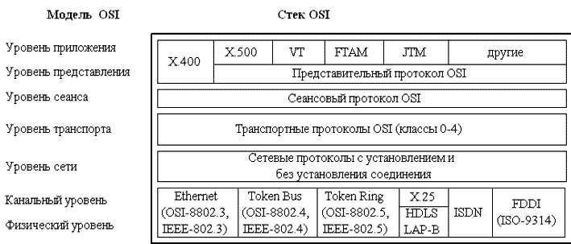

Спецификации Institute of Electrical and Electronics Engineers IEEE802 определяют стандарты для физических компонентов сети. Эти компоненты – сетевая карта (Network Interface Card – NIC) и сетевой носитель (network media), которые относятся к физическому и канальному уровням модели OSI. Спецификации IEEE802 определяют механизм доступа адаптера к каналу связи и механизм передачи данных. Стандарты IEEE802 подразделяют канальный уровень на подуровни:
Logical Link Control (LLC) – подуровень управления логической связью;
Media Access Control (MAC) – подуровень управления доступом к устройствам.
Спецификации IEEE 802 делятся на двенадцать стандартов:
Стандарт 802.1 (Internetworking – объединение сетей) задает механизмы управления сетью на MAC – уровне. В разделе 802.1 приводятся основные понятия и определения, общие характеристики и требования к локальным сетям, а также поведение маршрутизации на канальном уровне, где логические адреса должны быть преобразованы в их физические адреса и наоборот.
Стандарт 802.2 (Logical Link Control – управление логической связью) определяет функционирование подуровня LLC на канальном уровне модели OSI. LLC обеспечивает интерфейс между методами доступа к среде и сетевым уровнем.
Стандарт 802.3 (Ethernet Carrier Sense Multiple Access with Collision Detection – CSMA/CD LANs Ethernet – множественный доступ к сетям Ethernet с проверкой несущей и обнаружением конфликтов) описывает физический уровень и подуровень MAC для сетей, использующих шинную топологию и коллективный доступ с прослушиванием несущей и обнаружением конфликтов. Прототипом этого метода является метод доступа стандарта Ethernet (10BaseT, 10Base2, 10Base5). Метод доступа CSMA/CD. 802.3 также включает технологии Fast Ethernet (100BaseTx, 100BaseFx, 100BaseFl).
100Base-Tx – двухпарная витая пара. Использует метод MLT-3 для передачи сигналов 5-битовых порций кода 4В/5B по витой паре, а также имеется функция автопереговоров (Auto-negotiation) для выбора режима работы порта.
100Base-T4 – четырехпарная витая пара. Вместо кодирования 4B/5В в этом методе используется кодирование 8B/6T.
100BaseFx – многомодовое оптоволокно. Эта спецификация определяет работу протокола Fast Ethernet по многомодовому оптоволокну в полудуплексном и полнодуплексном режимах на основе хорошо проверенной схемы кодирования и передачи оптических сигналов, использующейся уже на протяжении ряда лет в стандарте FDDI. Как и в стандарте FDDI, каждый узел соединяется с сетью двумя оптическими волокнами, идущими от приемника (Rx) и от передатчика (Tx).
Этот метод доступа используется в сетях с общей шиной (к которым относятся и радиосети, породившие этот метод). Все компьютеры такой сети имеют непосредственный доступ к общей шине, поэтому она может быть использована для передачи данных между любыми двумя узлами сети. Простота схемы подключения - это один из факторов, определивших успех стандарта Ethernet. Говорят, что кабель, к которому подключены все станции, работает в режиме коллективного доступа (multiply access – MA).
Метод доступа CSMA/CD определяет основные временные и логические соотношения, гарантирующие корректную работу всех станций в сети.
Все данные, передаваемые по сети, помещаются в кадры определенной структуры и снабжаются уникальным адресом станции назначения. Затем кадр передается по кабелю. Все станции, подключенные к кабелю, могут распознать факт передачи кадра, и та станция, которая узнает собственный адрес в заголовках кадра, записывает его содержимое в свой внутренний буфер, обрабатывает полученные данные и посылает по кабелю кадр-ответ. Адрес станции–источника также включен в исходный кадр, поэтому станция-получатель знает, кому нужно послать ответ.
Стандарт 802.4 (Token Bus LAN – локальные сети Token Bus) определяет метод доступа к шине с передачей маркера, прототип – ArcNet.
При подключении устройств в ArcNet применяют топологию «шина» или «звезда». Адаптеры ArcNet поддерживают метод доступа Token Bus (маркерная шина) и обеспечивают производительность 2,5 Мбит/с. Этот метод предусматривает следующие правила:
В сетях ArcNet используется асинхронный метод передачи данных (в сетях Ethernet и Token Ring применяется синхронный метод), т. е. передача каждого байта в ArcNet выполняется посылкой ISU (Information Symbol Unit – единица передачи информации), состоящей из трёх служебных старт/стоповых битов и восьми битов данных.
Стандарт 802.5 (Token Ring LAN – локальные сети Token Ring) описывает метод доступа к кольцу с передачей маркера, прототип – Token Ring.
Сети стандарта Token Ring, так же как и сети Ethernet, используют разделяемую среду передачи данных, которая состоит из отрезков кабеля, соединяющих все станции сети в кольцо. Кольцо рассматривается как общий разделяемый ресурс, и для доступа к нему используется не случайный алгоритм, как в сетях Ethernet, а детерминированный, основанный на передаче станциями права на использование кольца в определенном порядке. Право на использование кольца передается с помощью кадра специального формата, называемого маркером, или токеном.
Стандарт 802.6 (Metropolitan Area Network – городские сети) описывает рекомендации для региональных сетей.
Стандарт 802.7 (Broadband Technical Advisory Group – техническая консультационная группа по широковещательной передаче) описывает рекомендации по широкополосным сетевым технологиям, носителям, интерфейсу и оборудованию.
Стандарт 802.8 (Fiber Technical Advisory Group – техническая консультационная группа по оптоволоконным сетям) содержит обсуждение использования оптических кабелей в сетях 802.3 – 802.6, а также рекомендации по оптоволоконным сетевым технологиям, носителям, интерфейсу и оборудованию, прототип – сеть FDDI (Fiber Distributed Data Interface).
Стандарт FDDI использует оптоволоконный кабель и доступ с применением маркера. Сеть FDDI строится на основе двух оптоволоконных колец, которые образуют основной и резервный пути передачи данных между узлами сети. Использование двух колец – это основной способ повышения отказоустойчивости в сети FDDI, и узлы, которые хотят им воспользоваться, должны быть подключены к обоим кольцам. Скорость сети до 100 Мб/с. Данная технология позволяет включать до 500 узлов на расстоянии 100 км.
Стандарт 802.9 (Integrated Voice and Data Network – интегрированные сети передачи голоса и данных) задает архитектуру и интерфейсы устройств одновременной передачи данных и голоса по одной линии, а также содержит рекомендации по гибридным сетям, в которых объединяют голосовой трафик и трафик данных в одной и той же сетевой среде.
В стандарте 802.10 (Network Security – сетевая безопасность) рассмотрены вопросы обмена данными, шифрования, управления сетями и безопасности в сетевых архитектурах, совместимых с моделью OSI. .
Стандарт 802.11 (Wireless Network – беспроводные сети) описывает рекомендации по использованию беспроводных сетей.
Стандарт 802.12 описывает рекомендации по использованию сетей 100VG – AnyLAN со скоростью100Мб/с и методом доступа по очереди запросов и по приоритету (Demand Priority Queuing – DPQ, Demand Priority Access – DPA).
Технология 100VG – это комбинация Ethernet и Token-Ring со скоростью передачи 100 Мбит/c, работающая на неэкранированных витых парах. В проекте 100Base-VG усовершенствован метод доступа с учетом потребности мультимедийных приложений. В спецификации 100VG предусматривается поддержка волоконно-оптических кабельных систем. Технология 100VG использует метод доступа – обработка запросов по приоритету (demand priority access). В этом случае узлам сети предоставляется право равного доступа. Концентратор опрашивает каждый порт и проверяет наличие запроса на передачу, а затем разрешает этот запрос в соответствии с приоритетом. Имеется два уровня приоритетов – высокий и низкий.
Согласованный набор протоколов разных уровней, достаточный для организации межсетевого взаимодействия, называется стеком протоколов. Для каждого уровня определяется набор функций–запросов для взаимодействия с выше лежащим уровнем, который называется интерфейсом. Правила взаимодействия двух машин могут быть описаны в виде набора процедур для каждого из уровней, которые называются протоколами.
Существует достаточно много стеков протоколов, широко применяемых в сетях. Это и стеки, являющиеся международными и национальными стандартами, и фирменные стеки, получившие распространение благодаря распространенности оборудования той или иной фирмы. Примерами популярных стеков протоколов могут служить стек IPX/SPX фирмы Novell, стек TCP/IP, используемый в сети Internet и во многих сетях на основе операционной системы UNIX, стек OSI международной организации по стандартизации, стек DECnet корпорации Digital Equipment и некоторые другие.
Стеки протоколов разбиваются на три уровня:
Сетевые протоколы предоставляют следующие услуги: адресацию и маршрутизацию информации, проверку на наличие ошибок, запрос повторной передачи и установление правил взаимодействия в конкретной сетевой среде. Ниже приведены наиболее популярные сетевые протоколы.
Каждый уровень компьютера–отправителя взаимодействует с таким же уровнем компьютера-получателя, как будто он связан напрямую. Такая связь называется логической или виртуальной связью. В действительности взаимодействие осуществляется между смежными уровнями одного компьютера.
Транспортные протоколы предоставляют следующие услуги надежной транспортировки данных между компьютерами. Ниже приведены наиболее популярные транспортные протоколы.
Прикладные протоколы отвечают за взаимодействие приложений. Ниже приведены наиболее популярные прикладные протоколы.
Следует различать стек протоколов OSI и модель OSI рис.3.1. Стек OSI – это набор вполне конкретных спецификаций протоколов, образующих согласованный стек протоколов. Этот стек протоколов поддерживает правительство США в своей программе GOSIP. Стек OSI в отличие от других стандартных стеков полностью соответствует модели взаимодействия OSI и включает спецификации для всех семи уровней модели взаимодействия открытых систем
|  |
| Рис. 3.1 Стек OSI |
На физическом и канальном уровнях стек OSI поддерживает спецификации Ethernet, Token Ring, FDDI, а также протоколы LLC, X.25 и ISDN.
На сетевом уровне реализованы протоколы, как без установления соединений, так и с установлением соединений.
Транспортный протокол стека OSI скрывает различия между сетевыми сервисами с установлением соединения и без установления соединения, так что пользователи получают нужное качество обслуживания независимо от нижележащего сетевого уровня. Чтобы обеспечить это, транспортный уровень требует, чтобы пользователь задал нужное качество обслуживания. Определены 5 классов транспортного сервиса, от низшего класса 0 до высшего класса 4, которые отличаются степенью устойчивости к ошибкам и требованиями к восстановлению данных после ошибок.
Сервисы прикладного уровня включают передачу файлов, эмуляцию терминала, службу каталогов и почту. Из них наиболее перспективными являются служба каталогов (стандарт Х.500), электронная почта (Х.400), протокол виртуального терминала (VT), протокол передачи, доступа и управления файлами (FTAM), протокол пересылки и управления работами (JTM). В последнее время ISO сконцентрировала свои усилия именно на сервисах верхнего уровня.
Набор многоуровневых протоколов, или как называют стек TCP/IP, предназначен для использования в различных вариантах сетевого окружения. Стек TCP/IP с точки зрения системной архитектуры соответствует эталонной модели OSI (Open Systems Interconnection – взаимодействие открытых систем) и позволяет обмениваться данными по сети приложениям и службам, работающим практически на любой платформе, включая Unix, Windows, Macintosh и другие.
|
Рис. 3.2 Соответствие семиуровневой модели OSI и четырехуровневой модели TCP/IP |
Реализация TCP/IP фирмы Microsoft [1] соответствует четырехуровневой модели вместо семиуровневой модели, как показано на рис. 3.2. Модель TCP/IP включает большее число функций на один уровень, что приводит к уменьшению числа уровней. В модели используются следующие уровни:
уровень Приложения модели TCP/IP соответствует уровням Приложения, Представления и Сеанса модели OSI;
уровень Транспорта модели TCP/IP соответствует аналогичному уровню Транспорта модели OSI;
межсетевой уровень модели TCP/IP выполняет те же функции, что и уровень Сети модели OSI;
уровень сетевого интерфейса модели TCP/IP соответствует Канальному и Физическому уровням модели OSI.
Через уровень Приложения модели TCP/IP приложения и службы получают доступ к сети. Доступ к протоколам TCP/IP осуществляется посредством двух программных интерфейсов (API – Application Programming Interface):
Сокеты Windows;
NetBIOS.
Интерфейс сокетов Windows, или как его называют WinSock, является сетевым программным интерфейсом, предназначенным для облегчения взаимодействия между различными TCP/IP – приложениями и семействами протоколов.
Интерфейс NetBIOS используется для связи между процессами (IPC – Interposes Communications) служб и приложений ОС Windows. NetBIOS выполняет три основных функции:
определение имен NetBIOS;
служба дейтаграмм NetBIOS;
служба сеанса NetBIOS.
В таблице 3.1 приведено семейство протоколов TCP/IP.
Уровень транспорта TCP/IP отвечает за установления и поддержания соединения между двумя узлами. Основные функции уровня:
подтверждение получения информации
управление потоком данных;
упорядочение и ретрансляция пакетов.
В зависимости от типа службы могут быть использованы два протокола:
TCP (Transmission Control Protocol – протокол управления передачей);
UDP (User Datagram Protocol – пользовательский протокол дейтаграмм).
TCP обычно используют в тех случаях, когда приложению требуется передать большой объем информации и убедиться, что данные своевременно получены адресатом. Приложения и службы, отправляющие небольшие объемы данных и не нуждающиеся в получении подтверждения, используют протокол UDP, который является протоколом без установления соединения.
Протокол TCP отвечает за надежную передачу данных от одного узла сети к другому. Он создает сеанс с установлением соединения, иначе говоря виртуальный канал между машинами. Установление соединения происходит в три шага:
Клиент, запрашивающий соединение, отправляет серверу пакет, указывающий номер порта, который клиент желает использовать, а также код (определенное число) ISN (Initial Sequence number).
Сервер отвечает пакетом, содержащий ISN сервера, а также ISN клиента, увеличенный на 1.
Клиент должен подтвердить установление соединения, вернув ISN сервера, увеличенный на 1.
Трехступенчатое открытие соединения устанавливает номер порта, а также ISN клиента и сервера. Каждый, отправляемый TCP – пакет содержит номера TCP – портов отправителя и получателя, номер фрагмента для сообщений, разбитых на меньшие части, а также контрольную сумму, позволяющую убедиться, что при передачи не произошло ошибок.
В отличие от TCP UDP не устанавливает соединения. Протокол UDP предназначен для отправки небольших объемов данных без установки соединения и используется приложениями, которые не нуждаются в подтверждении адресатом их получения. UDP также использует номера портов для определения конкретного процесса по указанному IP адресу. Однако UDP порты отличаются от TCP портов и, следовательно, могут использовать те же номера портов, что и TCP, без конфликта между службами.
Межсетевой уровень отвечает за маршрутизацию данных внутри сети и между различными сетями. На этом уровне работают маршрутизаторы, которые зависят от используемого протокола и используются для отправки пакетов из одной сети (или ее сегмента) в другую (или другой сегмент сети). В стеке TCP/IP на этом уровне используется протокол IP.
Протокол IP обеспечивает обмен дейтаграммами между узлами сети и является протоколом, не устанавливающим соединения и использующим дейтаграммы для отправки данных из одной сети в другую. Данный протокол не ожидает получение подтверждения (ASK, Acknowledgment) отправленных пакетов от узла адресата. Подтверждения, а также повторные отправки пакетов осуществляется протоколами и процессами, работающими на верхних уровнях модели.
К его функциям относится фрагментация дейтаграмм и межсетевая адресация. Протокол IP предоставляет управляющую информацию для сборки фрагментированных дейтаграмм. Главной функцией протокола является межсетевая и глобальная адресация. В зависимости от размера сети, по которой будет маршрутизироваться дейтаграмма или пакет, применяется одна из трех схем адресации.
Каждый компьютер в сетях TCP/IP имеет адреса трех уровней: физический (MAC-адрес), сетевой (IP-адрес) и символьный (DNS-имя).
Физический, или локальный адрес узла, определяемый технологией, с помощью которой построена сеть, в которую входит узел. Для узлов, входящих в локальные сети - это МАС–адрес сетевого адаптера или порта маршрутизатора, например, 11-А0-17-3D-BC-01. Эти адреса назначаются производителями оборудования и являются уникальными адресами, так как управляются централизовано. Для всех существующих технологий локальных сетей МАС – адрес имеет формат 6 байтов: старшие 3 байта - идентификатор фирмы производителя, а младшие 3 байта назначаются уникальным образом самим производителем.
Сетевой, или IP-адрес, состоящий из 4 байт, например, 109.26.17.100. Этот адрес используется на сетевом уровне. Он назначается администратором во время конфигурирования компьютеров и маршрутизаторов. IP-адрес состоит из двух частей: номера сети и номера узла. Номер сети может быть выбран администратором произвольно, либо назначен по рекомендации специального подразделения Internet (Network Information Center, NIC), если сеть должна работать как составная часть Internet. Обычно провайдеры услуг Internet получают диапазоны адресов у подразделений NIC, а затем распределяют их между своими абонентами. Номер узла в протоколе IP назначается независимо от локального адреса узла. Деление IP-адреса на поле номера сети и номера узла - гибкое, и граница между этими полями может устанавливаться произвольно. Узел может входить в несколько IP-сетей. В этом случае узел должен иметь несколько IP-адресов, по числу сетевых связей. IP-адрес характеризует не отдельный компьютер или маршрутизатор, а одно сетевое соединение.
например, SERV1.IBM.COM. Этот адрес назначается администратором и состоит из нескольких частей, например, имени машины, имени организации, имени домена. Такой адрес используется на прикладном уровне, например, в протоколах FTP или telnet.
Для определения локального адреса по IP-адресу используется протокол разрешения адреса Address Resolution Protocol (ARP). ARP работает различным образом в зависимости от того, какой протокол канального уровня работает в данной сети – протокол локальной сети (Ethernet, Token Ring, FDDI) с возможностью широковещательного доступа одновременно ко всем узлам сети, или же протокол глобальной сети (X.25, frame relay), как правило, не поддерживающий широковещательный доступ. Существует также протокол, решающий обратную задачу – нахождение IP-адреса по известному локальному адресу. Он называется реверсивный ARP – RARP (Reverse Address Resolution Protocol) и используется при старте бездисковых станций, не знающих в начальный момент своего IP-адреса, но знающих адрес своего сетевого адаптера.
В локальных сетях ARP использует широковещательные кадры протокола канального уровня для поиска в сети узла с заданным IP-адресом.
Узел, которому нужно выполнить отображение IP-адреса на локальный адрес, формирует ARP-запрос, вкладывает его в кадр протокола канального уровня, указывая в нем известный IP-адрес, и рассылает запрос широковещательно. Все узлы локальной сети получают ARP-запрос и сравнивают указанный там IP-адрес с собственным адресом. В случае их совпадения узел формирует ARP-ответ, в котором указывает свой IP-адрес и свой локальный адрес и отправляет его уже направленно, так как в ARP-запросе отправитель указывает свой локальный адрес. ARP-запросы и ответы используют один и тот же формат пакета.
Протокол управления сообщениями Интернета (ICMP – Internet Control Message Protocol) используется IP и другими протоколами высокого уровня для отправки и получения отчетов о состоянии переданной информации. Этот протокол используется для контроля скорости передачи информации между двумя системами. Если маршрутизатор, соединяющий две системы, перегружен трафиком, он может отправить специальное сообщение ICMP – ошибку для уменьшения скорости отправления сообщений.
Узлы локальной сети используют протокол управления группами Интернета (IGMP – Internet Group Management Protocol), чтобы зарегистрировать себя в группе. Информация о группах содержится на маршрутизаторах локальной сети. Маршрутизаторы используют эту информацию для передачи групповых сообщений.
Групповое сообщение, как и широковещательное, используется для отправки данных сразу нескольким узлам.
Network Device Interface Specification – спецификация интерфейса сетевого устройства, программный интерфейс, обеспечивающий взаимодействие между драйверами транспортных протоколов, и соответствующими драйверами сетевых интерфейсов. Позволяет использовать несколько протоколов, даже если установлена только одна сетевая карта.
Network Device Interface Specification – спецификация интерфейса сетевого устройства, программный интерфейс, обеспечивающий взаимодействие между драйверами транспортных протоколов, и соответствующими драйверами сетевых интерфейсов. Позволяет использовать несколько протоколов, даже если установлена только одна сетевая карта.
Этот уровень модели TCP/IP отвечает за распределение IP-дейтаграмм. Он работает с ARP для определения информации, которая должна быть помещена в заголовок каждого кадра. Затем на этом уровне создается кадр, подходящий для используемого типа сети, такого как Ethernet, Token Ring или ATM, затем IP-дейтаграмма помещается в область данных этого кадра, и он отправляется в сеть.
Назначение спецификации стандартов IEEE802.
Какой стандарт описывает сетевую технологию Ethernet?
Какой стандарт определяет задачи управления логической связью?
Какой стандарт задает механизмы управления сетью?
Какой стандарт описывает сетевую технологию ArcNet?
Какой стандарт описывает сетевую технологию Token Ring?
Какой стандарт содержит рекомендации по оптоволоконным сетевым технологиям?
Что такое интерфейс уровня базовой модели OSI?
Что такое протокол уровня базовой модели OSI?
Дать определение стека протоколов.
На какие уровни разбиваются стеки протоколов?
Назвать наиболее популярные сетевые протоколы.
Назвать наиболее популярные транспортные протоколы.
Назвать наиболее популярные прикладные протоколы.
Перечислить наиболее популярные стеки протоколов.
Назначение программных интерфейсов сокетов Windows и NetBIOS.
Чем отличается протокол TCP от UDP?
Функции протокола IP.
Какие существуют виды адресации в IP-сетях?
Какой протокол необходим для определения локального адреса по IP-адресу?
Какой протокол необходим для определения IP-адреса по локальному адресу?
Какой протокол используется для управления сообщениями Интернета?
Назначение уровня сетевого интерфейса стека TCP/IP.
Дать определение сеансового уровня.
Какой уровень отвечает за доступ приложений в сеть?
Задачи уровня представления данных.
Перечислить функции прикладного уровня.
Перечислить протоколы верхних уровней.
Дать определение стандартных стеков коммуникационных протоколов.